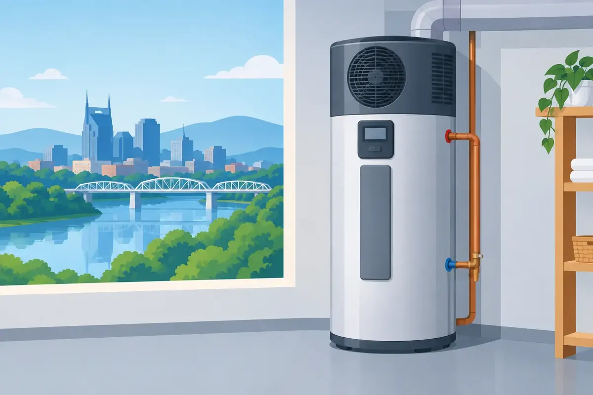

A water heater is easy to overlook until the morning shower turns cold or a growing utility bill gets your attention. This heat pump water heater guide is built for Middle Tennessee property owners who want dependable hot water while using less energy - without choosing a system that does not fit their home, family, or business.
Heat pump water heaters, often called hybrid water heaters, can be an excellent upgrade. They are not the right answer for every installation, though. The best choice depends on available space, household hot-water demand, electrical capacity, drain access, and where the unit will be installed.
How a Heat Pump Water Heater Works
A conventional electric tank water heater makes heat directly with electric heating elements. A heat pump water heater works differently. It pulls warmth from the surrounding air and transfers that heat into the water stored in its tank.
Think of it as moving heat rather than creating all of it from scratch. Because that process uses less electricity, a properly selected hybrid unit can cost significantly less to operate than a standard electric tank model. Most models also include electric elements that can help meet demand when the household needs hot water quickly.
That backup capability is why the term “hybrid” matters. In heat-pump-only operation, the unit prioritizes efficiency. In hybrid or high-demand modes, it can use the heat pump and electric elements together to recover faster. The trade-off is that faster recovery usually means higher energy use.
Why Middle Tennessee Homes Can Be a Good Fit
Heat pump water heaters need air around them to collect heat. Middle Tennessee’s generally warm, humid climate gives these systems favorable conditions for much of the year. A garage, basement, utility room, or other adequately sized mechanical area can be a practical location.
The unit also cools and dehumidifies the air around it as it operates. That can be a welcome benefit in a warm garage or basement during summer. In a small conditioned closet, however, it may cool the space your HVAC system is trying to heat, particularly during colder weather. That does not automatically rule out an installation, but it does mean placement deserves careful attention.
For commercial properties, the opportunity can be even greater when there is consistent demand for hot water and enough mechanical-room space. Restaurants, offices, rental properties, and light commercial facilities should have a qualified plumber evaluate usage patterns before selecting a system. A unit that is undersized for a busy property can erase the comfort and operating-cost benefits owners expect.
The Main Benefits of a Hybrid Water Heater
The strongest reason to consider a heat pump water heater is lower operating cost. Electricity rates, hot-water habits, tank size, and chosen operating mode all affect savings, but these systems are typically far more efficient than traditional electric tank heaters.
They can also provide a few practical advantages:
- A large storage tank keeps hot water available for normal household routines.
- Multiple operating modes let owners balance efficiency, recovery speed, and vacation settings.
- Dehumidification may improve comfort in the right utility area.
- Some models offer leak detection, alerts, and smart controls that help owners monitor performance.
A hybrid water heater is especially worth considering when replacing an aging electric tank unit. The plumbing and electrical layout may already be close to what the new system needs, although a professional inspection is still necessary. Existing setup does not guarantee the new unit will have enough clearance, proper condensate drainage, or the required electrical circuit.
The Trade-Offs to Consider Before Buying
A dependable recommendation should include the limitations, not just the energy-saving promise. Heat pump water heaters usually cost more upfront than a basic electric water heater. The long-term operating savings can help offset that difference, but payback varies from home to home.
They are also taller and need more surrounding air than many conventional tank units. A tight water-heater closet may not work without ducting or changes to the space. Manufacturers have specific clearance and installation requirements, so measurements matter.
Noise is another consideration. The heat pump has a fan and compressor, similar in principle to a refrigerator or dehumidifier. Most homeowners find the sound manageable in a garage or utility room, but it may be noticeable near a bedroom, living area, or quiet office.
Finally, the system produces condensate. Just as an air conditioner removes moisture from the air, a heat pump water heater needs a proper drain, condensate pump, or other approved disposal method. Ignoring this detail can create an avoidable water-damage risk.
Sizing Matters More Than Most People Expect
Choosing a water heater by gallon capacity alone can lead to disappointment. A family of five that takes back-to-back showers, runs the dishwasher nightly, and does frequent laundry has different needs than two adults with a staggered schedule.
A plumber should look at the unit’s first-hour rating, recovery performance in different operating modes, and the household’s busiest hour of water use. Larger tanks often make sense for homes with multiple bathrooms, soaking tubs, large families, or guests who visit often. For a smaller household, an oversized system may add unnecessary purchase cost and take up valuable space.
Do not assume a heat pump water heater performs exactly like the electric tank it replaces. In efficiency-focused mode, recovery can be slower. A correctly sized tank and an operating mode that fits your family’s routine are the practical answer.
Questions to Answer Before Installation
Before scheduling installation, consider where the unit will sit, whether that space stays reasonably temperate, and how far it is from the fixtures that use the most hot water. Longer pipe runs can mean a longer wait at the faucet and more water sent down the drain.
It also helps to confirm whether your electrical panel has room for the required dedicated circuit. Homes with older panels or several major electric appliances may need electrical work before installation. Gas water heater replacements deserve special attention as well. Changing from gas to heat pump technology can involve electrical upgrades, venting changes, gas-line capping, and permit requirements.
A professional should also inspect the water connections, shutoff valve, drain pan, temperature-and-pressure relief valve, and discharge piping. These details protect the equipment, the home, and the people inside it.
What Installation Should Include
A quality installation is more than setting a new tank in place and connecting two water lines. The installer should verify the location meets the manufacturer’s requirements, secure the unit appropriately, connect a safe condensate drain, and test the system after startup.
The old water heater should be disconnected and removed responsibly. The new unit should receive properly sized water connections, a drain pan where needed, and a correctly installed temperature-and-pressure relief valve with appropriate discharge piping. Earthquake strapping is generally not a local requirement in Middle Tennessee, but local code, manufacturer instructions, and the conditions of the installation always come first.
After installation, homeowners should understand the control panel. Knowing how to select a mode, recognize an alert, and use vacation settings can make a real difference in efficiency and comfort. Keep the owner’s manual available and register the equipment if the manufacturer requests it for warranty coverage.
Maintenance Keeps Efficiency From Slipping
Heat pump water heaters do not require complicated day-to-day care, but they should not be forgotten. The air filter needs periodic inspection and cleaning, especially in garages, laundry areas, or other spaces where dust collects. A clogged filter restricts airflow and can reduce performance.
Annual water-heater maintenance is also wise. Depending on water conditions, that may include checking the anode rod, flushing sediment from the tank, inspecting the condensate line, testing safety components, and looking for leaks or corrosion. Hard water can make maintenance more urgent because mineral buildup affects water-heating equipment over time.
If you notice weak hot-water recovery, unusual noise, water around the unit, error codes, or a sudden change in energy use, arrange service promptly. Small concerns are often easier and less expensive to correct before they become a no-hot-water emergency.
Is a Heat Pump Water Heater Right for You?
A heat pump water heater is often a strong choice for homeowners replacing an electric tank unit, particularly when they have a garage, basement, or utility room with enough space and drainage. It can also suit owners who want lower operating costs and are comfortable paying more upfront for a more efficient system.
A conventional tank water heater may be the better fit when installation space is tight, immediate recovery is the highest priority, or upfront budget is the deciding factor. A tankless water heater may appeal to households that need long, continuous hot-water delivery and can support the installation requirements. There is no one-size-fits-all water heater, and that is why an honest evaluation matters.
For homeowners and property managers in Middle Tennessee, Angle Stop Plumbing can assess the existing system, explain practical options with upfront pricing, and install a water heater that fits the property rather than forcing the property to fit the equipment. A little planning now can give your family the steady hot water and peace of mind they deserve for years to come.